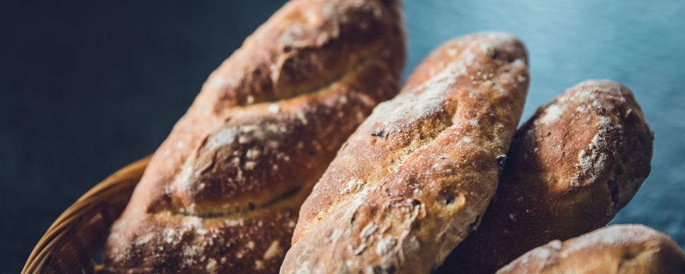
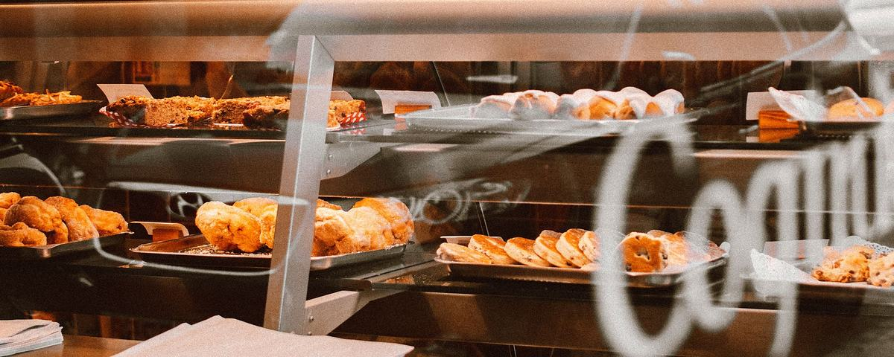
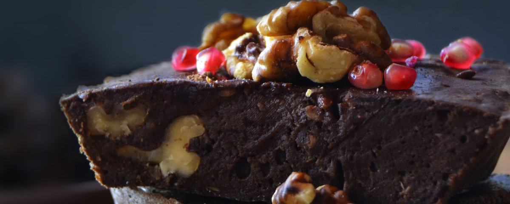

Rosemary Sea Salt Sourdough
A crackling, deeply golden crust gives way to an open, chewy crumb studded with fragrant rosemary and finished with flaky sea salt. Naturally leavened and fermented for 36 hours.
R65
Everything here is baked in-house, in small batches, starting before sunrise. Availability may vary by day, so ask us what's freshest when you visit.

A crackling, deeply golden crust gives way to an open, chewy crumb studded with fragrant rosemary and finished with flaky sea salt. Naturally leavened and fermented for 36 hours.
R65
Our founding loaf. Tangy, chewy, and blistered on top, with a soft, custardy interior that toasts into something close to perfection.
R58
Soft, faintly sweet, and sliced thick, this everyday loaf is made for stacking with whatever you love best between two slices.
R52
Dense, earthy, and threaded with caraway seed, this loaf carries a deep molasses color and a flavor that only gets better a day later.
R60
Crisp, shattering crust with an airy, irregular crumb. Best eaten still warm, torn straight from the bag.
R35

Laminated dough rolled thirty-six times, folded around rich almond frangipane, and baked until the layers shatter at the first bite.
R48
Golden, flaky, and impossibly light, our plain croissant is proof that simple things done well need nothing extra.
R38
Two ribbons of dark chocolate wrapped in buttery laminated dough, baked until deeply golden and softly molten inside.
R42
A spiraled, caramelized swirl of cinnamon and brown sugar, crisp on the outside edges and impossibly soft at the center.
R45
A pillowy base of laminated dough cradling a pool of vanilla custard and whatever fruit is at its sweetest this season.
R44

Dense and fudgy with a delicate crackly top, swirled with house-made salted caramel that oozes with every warm forkful.
R38
Tender vanilla bean sponge layered with silky Swiss meringue buttercream, sold by the slice for an everyday celebration.
R55
Rich, moist chocolate sponge filled with dark chocolate ganache, finished with a glossy chocolate glaze.
R58
A crisp, buttery shortcrust shell filled with bright, tangy lemon curd and finished with a torch-kissed meringue swirl.
R50
Custom-designed layer cakes for birthdays, weddings, and every occasion in between. Visit our Custom Cake Enquiry page to begin designing yours.
From R450
Freshly brewed each hour, sourced from a local roastery we've trusted for years.
R28
Rich espresso topped with velvety steamed milk foam, dusted with cocoa.
R35
Warm spiced tea concentrate steamed with milk, comforting on even the coldest morning.
R38